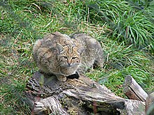
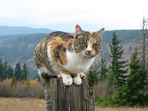
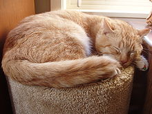

Mačka domáca (lat. Felis catus) je už niekoľko storočí domestikovaný poddruh mačky divej. Po svojich predkoch zdedila vynikajúci zrak a sluch, k lovu dokonale prispôsobené telo. Ešte prednedávnom bola mačka neodmysliteľnou súčasťou každého vidieckeho domu. S rozvojom civilizácie je ale tohto vidieckeho prostredia čoraz menej a mačka stráca svoje postavenie úžitkového domáceho zvieraťa. V mestách sa pre svoju reprodukčnú schopnosť a pre potenciálne nebezpečenstvo prenosu toxoplazmózy a rozličných parazitov stáva nevítaným problémom. Na druhej strane je vďaka relatívne nenáročnej starostlivosti a schopnosti dodať príbytku teplo domova čoraz obľúbenejším domácim zvieraťom.Mačkovité šelmy patria medzi cicavce. Prvé cicavce sa vyvinuli z plazov asi pred 200 miliónmi rokov. Po vymretí dinosaurov, pred približne 65 miliónmi rokov, začali cicavce získavať dominantné postavenie, ktoré si udržali dodnes. Vyvinulo sa niekoľko mäsožravých čeľadí, kam patrí aj čeľaď Miacis. Boli to šelmy veľkosti lasice až vlka. V období raných treťohôr, čiže pred 60 – 35 miliónmi rokov sa jedinci z čeľade Miacidae rozšírili zo Severnej Ameriky cez Beringovu úžinu do celej Eurázie. Postupne sa z nich vyvinuli predchodcovia dnešných mäsožravých čeľadí, vrátane mačiek. Prvé mačkovité zvieratá sa objavili v eocéne pred asi 40 miliónmi rokov.
  